nail map.
ネイリストさんとお客さんが直接繋がるマッチングサービス新登場
＼ 2016年5月9日リリース ／
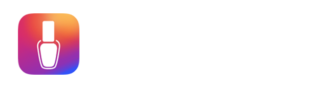
シンプルな３ステップ予約で、
簡単・安心・スピーディーにお望みのネイルを。
新アプリ「ネイルマップ」をリリースしました！
「ネイルマップ」はフリーのネイリストを自分の位置情報から探すことができるアプリです。
ネイルサロンよりもリーズナブルにネイリストを「評価」を見て探すことができます。
チャット機能で希望のネイルや待ち合わせ方法などを話あうことで円滑に予約が可能です。
チャット中に画像も送信できるため出張ネイルなどでも事前に希望のネイルイメージを合わせておくことが可能なので安心です。
完全 無料のフリーネイリストとの予約アプリ「ネイルマップ」を是非体験ください
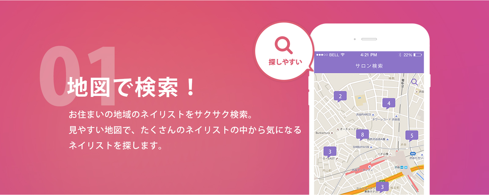
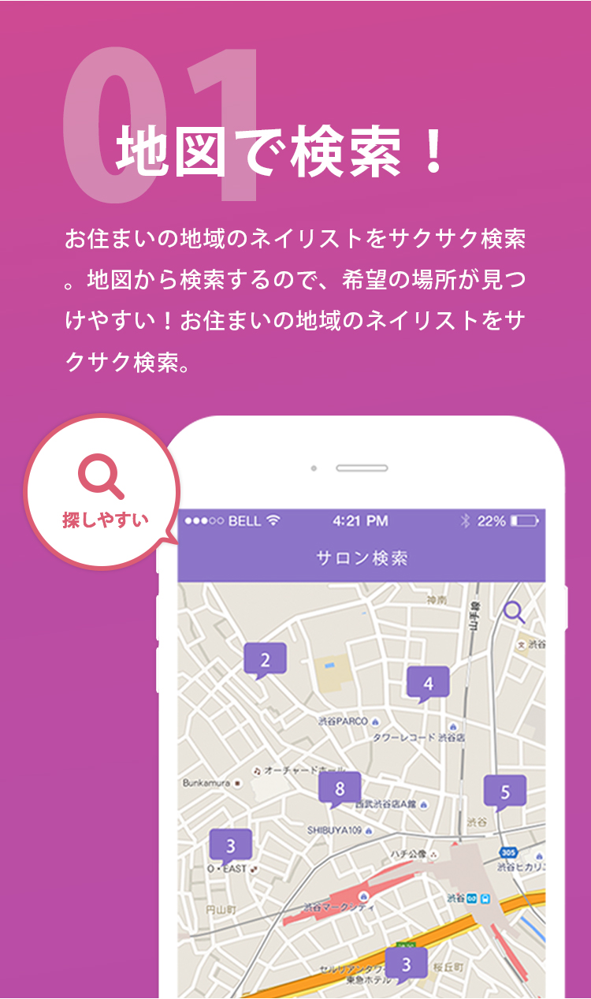
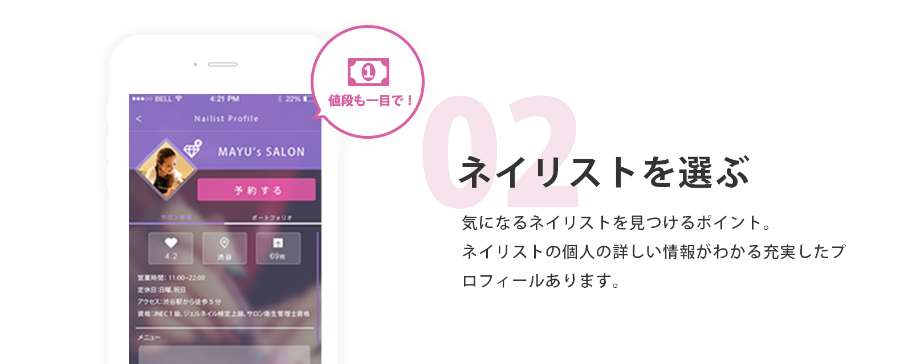
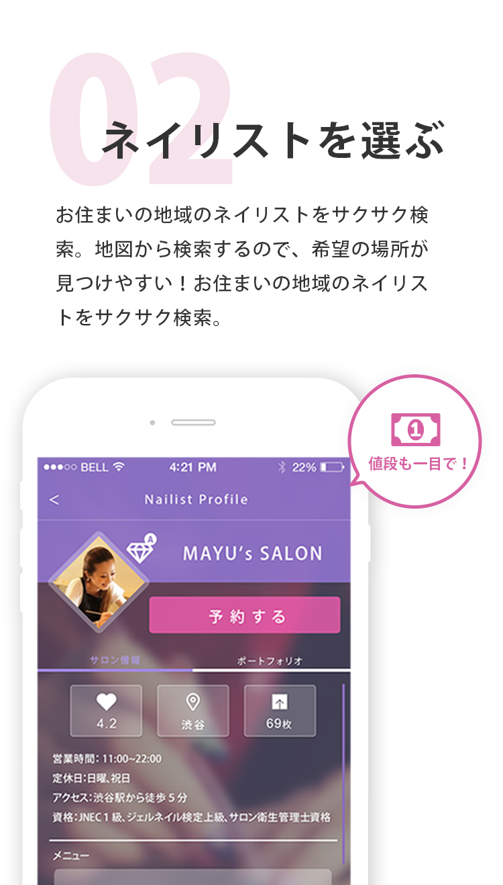
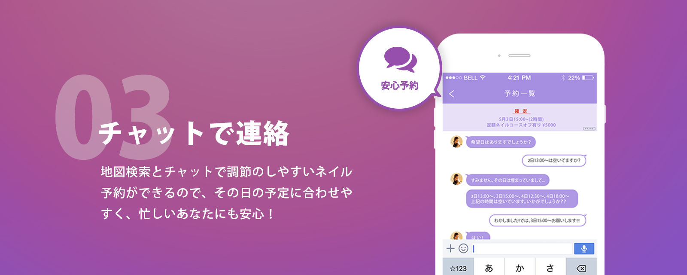
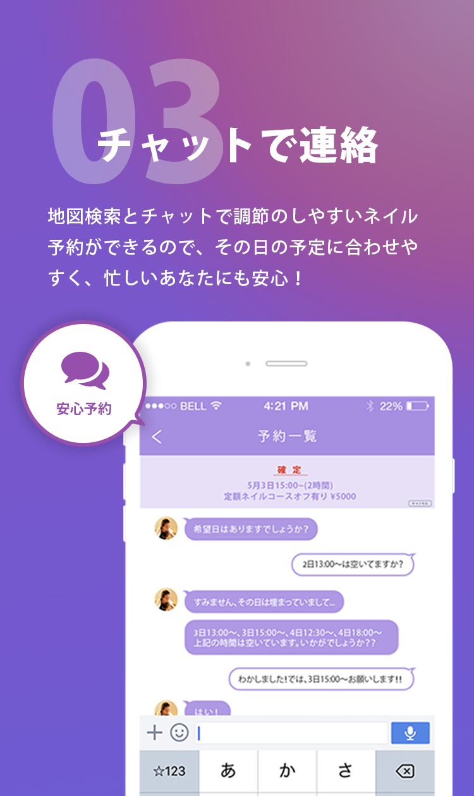
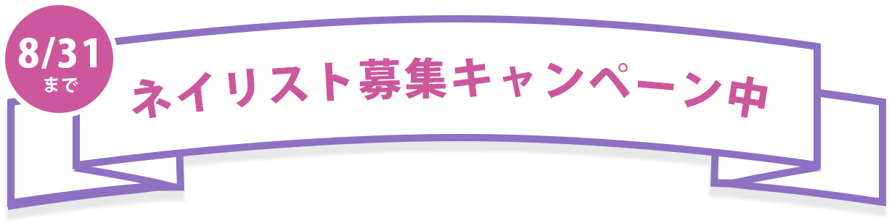
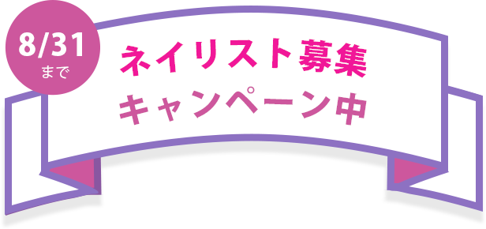
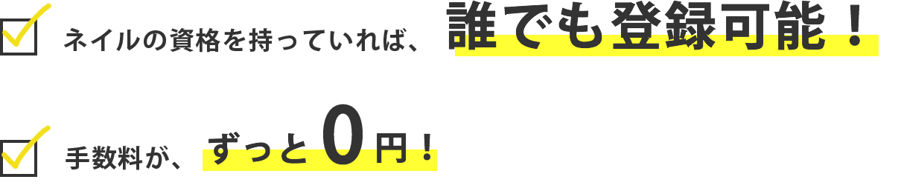 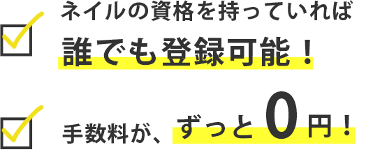
現在、ネイリスト募集キャンペーン中のため今登録されたネイリストの方は永久手数料０円となるキャンペーンを実施中。
フリーネイリストの方は是非ともこの機会にご登録ください。
（２０１６年８月末まで）
こんな方へオススメ！
- ネイリストの資格を持っているがサロンで仕事ができない主婦の方。
- サロン 求人などで理不尽な思いをした方。
- 副業でネイリストとして仕事をしたい方。
- ネイリスト資格を取得したが仕事につながっていない方
※本サービスのネイリスト登録にはネイリスト検定の資格証が必要となります。
ネイリストを登録する※サービス誕生から間もないため、現在ネイリストの登録の募集を強化しています。
※Android版7月下旬頃リリース予定
Copyright © Arsaga Partners